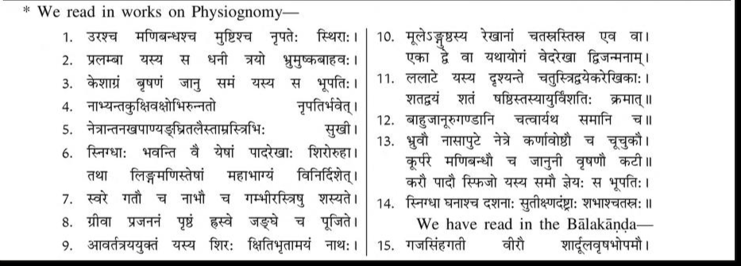
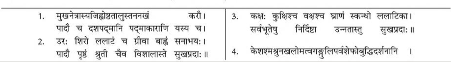

॥ॐ॥
मनोजवं मारुततुल्यवेगं जितेन्द्रियं बुद्धिमतां वरिष्ठम्।
वातात्मजं वानरयूथमुख्यं श्रीरामदूतं शरणं प्रपद्ये॥
Sundarakanda Sarga 35
Hanuman narrates his story to Sita. Gives description of Rama and Lakshmana
(Benefit: Strengthening relations and friendships)

(89 Shlokas)
तां तु रामकथां श्रुत्वा वैदेही वानरर्षभात्।
उवाच वचनं सान्त्वमिदं मधुरया गिरा॥5.35.1॥
Word-by-word meaning: ताम् that, तु indeed, रामकथाम् story of Rama, श्रुत्वा having heard, वैदेही Vaidehi (Sita), वानरर्षभात् from the best of monkeys (Hanuman), उवाच spoke, वचनम् words, सान्त्वम् gentle (consoling), इदम् these, मधुरया sweet, गिरा with voice
Anvay: वानरर्षभात् तां रामकथां श्रुत्वा, वैदेही मधुरया गिरा इदं सान्त्वं वचनम् उवाच।
Simple meaning: Having heard the story of Rama from the best of monkeys, Vaidehi (Sita) spoke these gentle and sweet words.
क्व ते रामेण संसर्गः कथं जानासि लक्ष्मणम्।
वानराणां नराणां च कथमासीत्समागमः॥5.35.2॥
Word-by-word meaning: क्व where, ते your, रामेण with Rama, संसर्गः association, कथम् how, जानासि do you know, लक्ष्मणम् Lakshmana, वानराणाम् of monkeys, नराणाम् च and of men, कथम् how, आसीत् was, समागमः union or meeting
Anvay: ते रामेण संसर्गः क्व, लक्ष्मणं कथं जानासि, वानराणां नराणां च समागमः कथम् आसीत्।
Simple meaning: “Where was your association with Rama? How do you know Lakshmana? How did a meeting take place between monkeys and men?
यानि रामस्य लिङ्गानि लक्ष्मणस्य च वानर।
तानि भूयस्समाचक्ष्व न मां शोकस्समाविशेत्॥5.35.3॥
Word-by-word meaning: यानि which, रामस्य of Rama, लिङ्गानि characteristics, लक्ष्मणस्य च and of Lakshmana, वानर O monkey, तानि those, भूयः again, समाचक्ष्व describe, न not, माम् me, शोकः grief, समाविशेत् may enter
Anvay: वानर! यानि रामस्य लक्ष्मणस्य च लिङ्गानि, तानि भूयः समाचक्ष्व, शोकः मां न समाविशेत्।
Simple meaning: “O monkey! Please describe again the characteristics of Rama and Lakshmana so that grief may not enter me.
कीदृशं तस्य संस्थानं रूपं रामस्य कीदृशम्।
कथमूरू कथं बाहू लक्ष्मणस्य च शंस मे॥5.35.4॥
Word-by-word meaning: कीदृशम् what kind, तस्य his, संस्थानम् physique, रूपम् form, रामस्य of Rama, कीदृशम् what kind, कथम् how, ऊरू thighs, कथम् how, बाहू arms, लक्ष्मणस्य च and of Lakshmana, शंस describe, मे to me
Anvay: तस्य रामस्य लक्ष्मणस्य च संस्थानं रूपं कीदृशं, ऊरू कथं, बाहू कथं, मे शंस।
Simple meaning: ““What the shape and form of Rama as well as of Lakshmana are like. What are their thighs and arms like? Tell me.”
एवमुक्तस्तु वैदेह्या हनुमान्मारुतात्मजः।
ततो रामं यथातत्त्वमाख्यातुमुपचक्रमे॥5.35.5॥
Word-by-word meaning: एवम् thus, उक्तः addressed, तु then, वैदेह्या by Vaidehi (Sita), हनुमान् Hanuman, मारुतात्मजः son of the Wind-God, ततः then, रामम् about Rama, यथा तत्त्वम् in true nature, आख्यातुम् to describe, उपचक्रमे began
Anvay: वैदेह्या एवम् उक्तः तु मारुतात्मजः हनुमान्, ततः यथातत्त्वं रामम् आख्यातुम् उपचक्रमे।
Simple meaning: Thus addressed by Sita, Hanuman, the son of the Wind-God, then began to describe Rama in his true nature.
जानन्ती बत दिष्ट्या मां वैदेहि परिपृच्छसि।
भर्तुः कमलपत्राक्षि संस्थानं लक्ष्मणस्य च॥5.35.6॥
Word-by-word meaning: जानन्ती knowing, बत indeed, दिष्ट्या by good fortune, माम् me, वैदेहि O Vaidehi (Sita), परिपृच्छसि you ask, भर्तुः of your husband, कमल-पत्र-अक्षि O lotus-eyed one, संस्थानम् physique, लक्ष्मणस्य च and of Lakshmana
Anvay: वैदेहि! कमलपत्राक्षि! भर्तुः लक्ष्मणस्य च संस्थानं जानन्ती, बत दिष्ट्या मां परिपृच्छसि।
Simple meaning: “O Vaidehi, O lotus-eyed one! How fortunate it is that you ask me about the physique of your husband and of Lakshmana, even though you know about them.
यानि रामस्य चिह्नानि लक्ष्मणस्य च यानि वै।
लक्षितानि विशालाक्षि वदतश्शृणु तानि मे॥5.35.7॥
Word-by-word meaning: यानि which, रामस्य of Rama, चिह्नानि marks or features, लक्ष्मणस्य of Lakshmana, च and, यानि वै indeed which, लक्षितानि observed, विशालाक्षि O wide-eyed lady, वदतः as I speak, शृणु listen, तानि those, मे from me
Anvay: विशालाक्षि! रामस्य यानि चिह्नानि, लक्ष्मणस्य च यानि वै लक्षितानि, तानि वदतः मे शृणु।
Simple meaning: “O wide-eyed lady, those features of Rama and Lakshmana that I have observed, hear from me even as I speak.
रामः कमलपत्राक्षस्सर्वसत्त्वमनोहरः।
रूपदाक्षिण्यसम्पन्नः प्रसूतो जनकात्मजे॥5.35.8॥
Word-by-word meaning: रामः Rama, कमल-पत्र-अक्षः lotus-petal-eyed, सर्व-सत्त्व-मनोहरः charming to all beings, रूप-दाक्षिण्य-सम्पन्नः endowed with beauty and kindness, प्रसूतः born (suited), जनकात्मजे O daughter of Janaka
Anvay: जनकात्मजे! कमलपत्राक्षः सर्वसत्त्वमनोहरः रूपदाक्षिण्यसम्पन्नः रामः प्रसूतः।
Simple meaning: “O daughter of Janaka, Rama has eyes like lotus petals, is delightful to all beings, and is endowed with beauty and graciousness by nature.
तेजसाऽदित्यसङ्काशः क्षमया पृथिवीसमः।
बृहस्पतिसमो बुद्ध्या यशसा वासवोपमः॥5.35.9॥
Word-by-word meaning: तेजसा in brilliance, आदित्य-सङ्काशः like the sun, क्षमया in forbearance, पृथिवी-समः equal to the earth, बृहस्पति-समः equal to Brihaspati, बुद्ध्या in wisdom, यशसा in fame, वासव-उपमः comparable to Indra
Anvay: तेजसा आदित्यसङ्काशः, क्षमया पृथिवीसमः, बुद्ध्या बृहस्पतिसमः, यशसा वासवोपमः।
Simple meaning: “In brilliance he is like the sun, in patience equal to the earth, in wisdom comparable to Brihaspati, and in fame he is like Indra.
रक्षिता जीवलोकस्य स्वजनस्याभिरक्षिता।
रक्षिता स्वस्य वृत्तस्य धर्मस्य च परन्तपः॥5.35.10॥
Word-by-word meaning: रक्षिता protector, जीव-लोकस्य of the world of living beings, स्वजनस्य of his own people, अभिरक्षिता the cherished protector, रक्षिता the protector, स्वस्य of his own, वृत्तस्य conduct, धर्मस्य of dharma, च and, परन्तपः the scorcher of enemies
*रक्षिता (Meaning - रक्षकः) रक्षितृ ऋकारान्तः, पुंलिङ्गः, तृजन्तः प्रथमा एकवचनम् ( रक्षिता, रक्षितारौ, रक्षितारः )
Anvay: (सः) परन्तपः जीवलोकस्य रक्षिता, स्वजनस्य अभिरक्षिता, स्वस्य वृत्तस्य धर्मस्य च रक्षिता।
Simple meaning: “He, the scorcher of enemies, is the protector of all living beings, the cherished guardian of his own people, and the upholder of his own conduct and dharma.
रामो भामिनि लोकस्य चातुर्वर्ण्यस्य रक्षिता।
मर्यादानां च लोकस्य कर्ता कारयिता च सः॥5.35.11॥
Word-by-word meaning: रामः Rama, भामिनि O noble lady, लोकस्य of the world, चातुर्वर्ण्यस्य of the fourfold order (varna system), रक्षिता protector, मर्यादानाम् of righteous limits or boundaries, च and, लोकस्य of the world, कर्ता maker, कारयिता enforcer, सः he
Anvay: भामिनि! रामः लोकस्य चातुर्वर्ण्यस्य रक्षिता, सः लोकस्य मर्यादानां च कर्ता च कारयिता च।
Simple meaning: “O noble lady, Rama is the protector of the world and the fourfold social order. He is the one who establishes and enforces the righteous boundaries of society.
अर्चिष्मानर्चितोऽत्यर्थं ब्रह्मचर्यव्रते स्थितः।
साधूनामुपकारज्ञः प्रचारज्ञश्च कर्मणाम्॥5.35.12॥
Word-by-word meaning: अर्चिष्मान् radiant, अर्चितः honored, अत्यर्थम् exceedingly, ब्रह्मचर्यव्रते in the vow of chastity or spiritual discipline, स्थितः firmly established, साधूनाम् of the virtuous, उपकारज्ञः knower of service or gratitude, प्रचारज्ञः knower of proper conduct, च and, कर्मणाम् of actions
Anvay: (सः) अर्चिष्मान्, अर्चितः अत्यर्थं ब्रह्मचर्यव्रते स्थितः, साधूनाम् उपकारज्ञः, कर्मणां प्रचारज्ञः च।
Simple meaning: “He is radiant, highly honored, firmly established in the vow of chastity, grateful to the virtuous for their help, and well-versed in the right way of action.
राजविद्याविनीतश्च ब्राह्मणानामुपासकः।
श्रुतवान्शीलसम्पन्नो विनीतश्च परन्तपः॥5.35.13॥
Word-by-word meaning: राज-विद्या-विनीतः trained in royal sciences, च and, ब्राह्मणानाम् of the Brahmanas, उपासकः respectful attendant, श्रुतवान् learned in scriptures, शील-सम्पन्नः endowed with good character, विनीतः humble, च and, परन्तपः scorcher of enemies
Anvay: (सः) राजविद्याविनीतः च, ब्राह्मणानाम् उपासकः, श्रुतवान्, शीलसम्पन्नः, विनीतः च, परन्तपः।
Simple meaning: “He is trained in royal sciences, serves and respects the Brahmanas, is well-versed in the scriptures, endowed with good character, humble, and a great subduer of enemies.
यजुर्वेदविनीतश्च वेदविद्भिस्सुपूजितः।
धनुर्वेदे च वेदेषु वेदाङ्गेषु च निष्ठितः॥5.35.14॥
Word-by-word meaning: यजुर्वेद-विनीतः trained in the Yajurveda, च and, वेदविद्भिः by the knowers of the Vedas, सुपूजितः highly honored, धनुर्वेदे in the science of archery, च and, वेदेषु in the Vedas, वेदाङ्गेषु in the limbs of the Vedas, च and, निष्ठितः firmly established
Anvay: (सः) यजुर्वेदविनीतः च, वेदविद्भिः सुपूजितः, धनुर्वेदे च, वेदेषु च, वेदाङ्गेषु च निष्ठितः।
Simple meaning: “He is trained in the Yajurveda, highly honored by Vedic scholars, and well-versed in the science of archery, the Vedas, and the Vedangas (Vedic auxiliaries).
विपुलांसो महाबाहुः कम्बुग्रीवश्शुभाननः।
गूढजत्रुस्सुताम्राक्षो रामो देवि जनैश्श्रुतः॥5.35.15॥
Word-by-word meaning: विपुल-अंसः broad shoulders, महाबाहुः mighty arms, कम्बु-ग्रीवः conch-like neck, शुभ-आननः auspicious face, गूढ-जत्रुः hidden collarbones, सु-ताम्र-अक्षः slightly red eyes, रामः Rama, देवि O Devi, जनैः श्रुतः is known by people
Anvay: देवि! रामः विपुलांसः महाबाहुः कम्बुग्रीवः शुभाननः गूढजत्रुः सुताम्राक्षः जनैः श्रुतः।
Simple meaning: “O Devi, Rama is known among people as one with broad shoulders, mighty arms, a conch-like neck, an auspicious face, hidden collarbones, and reddish eyes.
दुन्दुभिस्वननिर्घोषस्स्निग्धवर्णः प्रतापवान्।
समस्समविभक्ताङ्गो वर्णं श्यामं समाश्रितः॥5.35.16॥
Word-by-word meaning: दुन्दुभि-स्वन-निर्घोषः deep like the sound of a drum, स्निग्ध-वर्णः glossy complexion, प्रतापवान् powerful or majestic, समः proportionate, सम-विभक्त-अङ्गः limbs well-proportioned, वर्णम् complexion, श्यामम् dark-hued, समाश्रितः endowed with
Anvay: (रामः) दुन्दुभिस्वननिर्घोषः स्निग्धवर्णः प्रतापवान् समः समविभक्ताङ्गः श्यामं वर्णं समाश्रितः।
Simple meaning: “Rama has a voice deep like the sound of a drum, a glossy complexion, majestic presence, proportionate form with well-distributed limbs, and he is endowed with a dark-hued complexion.
त्रिस्थिरस्त्रिप्रलम्बश्च त्रिसमस्त्रिषु चोन्नतः।
त्रिताम्रस्त्रिषु च स्निग्धो गम्भीरस्त्रिषु नित्यशः॥5.35.17॥
Word-by-word meaning: त्रिस्थिरः (1) firm in three limbs - the breast, wrist and fist, त्रिप्रलम्बः च (2) long in three parts - the eyebrows, arms and the scrotum, त्रिसमः (3) equal in three parts - his locks, testicles and knees, त्रिषु च उन्नतः (4) elevated in three parts - the breast, the rim of the navel and the abdomen, त्रिताम्रः (5) reddish in three parts - the rims of his eyes, nails and the palms as well as the soles, त्रिषु च स्निग्धः (6) glossy or smooth in three parts - the end of the membrum virile, the lines on his soles and the hair), गम्भीरः त्रिषु नित्यशः (7) always deep in three aspects - the voice, gait and the navel
Anvay: सः रामः त्रिस्थिरः, त्रिप्रलम्बः, त्रिसमः, त्रिषु च उन्नतः, त्रिताम्रः त्रिषु च स्निग्धः, नित्यशः त्रिषु गम्भीरः।
Simple meaning: “That Rama is firm in three parts, long in three parts, equal in three parts, elevated in three parts, reddish in three parts, smooth in three parts, and is always deep or profound in three aspects.
त्रिवलीवांस्त्र्यवनतश्चतुर्व्यङ्गस्त्रिशीर्षवान्।
चतुष्कलश्चतुर्लेखश्चतुष्किष्कुश्चतुस्समः॥5.35.18॥
Word-by-word meaning: त्रिवलीवान् (8) having three folds - on the neck and belly, त्र्यवनतः with three depressions (on the middle of his soles, the lines on his soles, and the nipples), चतुर्व्यङ्गः four parts of his body are depressed (neck, penis, shanks and back), त्रिशीर्षवान् (9) endowed with three spirals in the hair of his head, चतुष्कलः (10) four lines at the root of his thumbs - indicating his knowledge of all the four Vedas), चतुर्लेखः (11) four lines on his forehead - indicating longevity, चतुष्किष्कुः he is four cubits in height (96 inches), चतुःसमः (12) has four pairs of limbs - the cheeks, arms, shanks and knees - equally matched.
Anvay: (सः रामः) त्रिवलीवान् त्र्यवनतः चतुर्व्यङ्गः त्रिशीर्षवान् चतुष्कलः चतुर्लेखः चतुष्किष्कुः चतुःसमः।
Simple meaning: “Rama has three folds, three bodily depressions, four marked features, three distinct head parts, four symmetrical and well-formed parts, four auspicious lines, four strong joints, and is symmetrical in all four limbs.
चतुर्दशसमद्वन्द्वश्चतुर्दंष्ट्रश्चतुर्गतिः।
महोष्ठहनुनासश्च पञ्चस्निग्धोऽष्टवंशवान्॥5.35.19॥
Word-by-word meaning: चतुर्दश-समद्वन्द्वः (13) having fourteen pairs of equally developed - the eyebrows, nostrils, eyes, ears, the lips, nipples, elbows, wrists, the knees, the testicles, the loins, the hands, the feet and the thighs, चतुर्दंष्ट्रः (14) having four prominent canine teeth at his upper and the lower jaws, चतुर्गतिः (15) possessing four kinds of graceful movement resembling those of a lion, a tiger, an elephant and a bull, महा-ओष्ठ-हनु-नासः च having excellent lips, jaws, and nose, पञ्चस्निग्धः having five glossy (or smooth) features - the hair, eyes, teeth, skin and soles, अष्टवंशवान् having eight well-formed parts viz., the arms, the fingers and the toes, the eyes and the ears, the nose, the backbone and the body
Anvay: (सः रामः) चतुर्दशसमद्वन्द्वः चतुर्दंष्ट्रः चतुर्गतिः महोष्ठहनुनासः च पञ्चस्निग्धः अष्टवंशवान्।
Simple meaning: “Rama has fourteen pairs of equally developed features, four prominent canine teeth, four graceful types of movement, large lips, jaws, and nose. He has five glossy features and eight well-formed bodily parts.

दशपद्मो दशबृहत्त्रिभिर्व्याप्तो द्विशुक्लवान्।
षडुन्नतो नवतनुस्त्रिभिर्व्याप्नोति राघवः॥5.35.20॥
Word-by-word meaning: दशपद्मः (1) having ten lotus-like features - the countenance, the mouth, the eyes, the tongue, lips, palate, breasts, nails, the hands and the feet, दशबृहत् (2) having ten large (or broad) features - the chest, the head, the forehead, the neck, the arms, the shoulders, the navel, the feet, the back and the ears, त्रिभिः व्याप्तः is spread through by reason of three - splendour, renown and glory, द्वि-शुक्लवान् possessing two white (bright) features - the teeth and the eyes, षट्-उन्नतः (3) having six elevated or prominent features - the flanks, the abdomen, the breast, the nose, the shoulders and the forehead, नवतनुः (4) having nine slender or delicate parts - the hair, the moustaches and the beard, nails, the hair on the body, the skin, the finger-joints, the membrum virile acumen and perception, त्रिभिः व्याप्नोति pursues religious merit, worldly riches and sensual delight in three periods, viz., the forenoon, midday and afternoon, राघवः Raghava (Rama)
Anvay: राघवः दशपद्मः दशबृहत् त्रिभिः व्याप्तः द्विशुक्लवान् षडुन्नतः नवतनुः त्रिभिः व्याप्नोति।
Simple meaning: “Raghava (Rama) possesses ten lotus-like features and ten broad features. He is covered by three distinctive traits, has two radiant white features, six elevated features, nine slender parts, and extends through three (qualities or features).

सत्यधर्मपरश्श्रीमान् सङ्ग्रहानुग्रहे रतः।
देशकालविभागज्ञस्सर्वलोकप्रियंवदः॥5.35.21॥
Word-by-word meaning: सत्य-धर्म-परः devoted to truth and righteousness, श्रीमान् auspicious or radiant (possessing prosperity and grace), सङ्ग्रह-अनुग्रहे रतः engaged in protecting and favoring (his people), देश-काल-विभाग-ज्ञः knower of proper division of place and time (i.e., judicious and timely in action), सर्व-लोक-प्रियं-वदः one who speaks words pleasing to all people
Anvay: श्रीमान् सत्यधर्मपरः सङ्ग्रहानुग्रहे रतः देशकालविभागज्ञः सर्वलोकप्रियंवदः।
Simple meaning: “He is radiant and devoted to truth and righteousness, ever engaged in protecting and uplifting others. He understands the proper time and place for actions and speaks words that are pleasing to all.
भ्राता तस्य च द्वैमात्रस्सौमित्रिरपराजितः।
अनुरागेण रूपेण गुणैश्चैव तथाविधः॥5.35.22॥
Word-by-word meaning: भ्राता brother, तस्य his, च and, द्वैमात्रः born of a different mother (i.e., step-brother), सौमित्रिः son of Sumitra (i.e., Lakshmana), अपराजितः unconquered, अनुरागेण with affection, रूपेण in form, गुणैः in virtues, च एव and also, तथा-विधः similar to (Rama)
Anvay: तस्य भ्राता सौमित्रिः द्वैमात्रः अपराजितः अनुरागेण रूपेण गुणैः च तथाविधः एव (आसीत्)।
Simple meaning: “His brother Saumitri (Lakshmana), born of a different mother, is unconquerable and matches him in affection, appearance, and virtues.
तावुभौ नरशार्दूलौ त्वद्दर्शनसमुत्सुकौ।
विचिन्वन्तौ महीं कृत्स्नामस्माभिरभिसङ्गतौ॥5.35.23॥
Word-by-word meaning: तौ those two, उभौ both, नर-शार्दूलौ tiger among men (Rama and Lakshmana), त्वत्-दर्शन-समुत्सुकौ deeply eager to see you, विचिन्वन्तौ searching, महीम् the earth, कृत्स्नाम् entire, अस्माभिः by us (monkeys), अभिसङ्गतौ have been joined/encountered
Anvay: नरशार्दूलौ त्वद्दर्शनसमुत्सुकौ कृत्स्नां महीं विचिन्वन्तौ तौ उभौ अस्माभिः अभिसङ्गतौ।
Simple meaning: “Those two tigers among men, eager to see you, have been searching the entire earth and were met by us.
त्वामेव मार्गमाणौ तौ विचरन्तौ वसुन्धराम्।
ददर्शतुर्मृगपतिं पूर्वजेनावरोपितम्॥5.35.24॥
Word-by-word meaning: त्वाम् एव you only, मार्गमाणौ searching for, तौ those two, विचरन्तौ wandering, वसुन्धराम् the earth, ददर्शतुः saw, मृग-पतिम् the king of animals (Sugriva), पूर्वजेन by the elder brother, आवरोपितम् one who has been dethroned
Anvay: त्वाम् एव मार्गमाणौ वसुन्धरां विचरन्तौ तौ पूर्वजेन आवरोपितं मृगपतिं ददर्शतुः।
Simple meaning: “While wandering the earth, in search of you only, those two, saw the king of the monkeys who had been dethroned by his elder brother.
ऋश्यमूकस्य पृष्ठे तु बहुपादपसङ्कुले।
भ्रातुर्भयार्तमासीनं सुग्रीवं प्रियदर्शनम्॥5.35.25॥
Word-by-word meaning: ऋश्यमूकस्य of Rishyamuka, पृष्ठे on the slope (back side), तु indeed, बहु-पादप-सङ्कुले thickly covered with many trees, भ्रातुः from his brother, भय-आर्तम् distressed by fear, आसीनम् seated, सुग्रीवम् Sugriva, प्रिय-दर्शनम् pleasing in appearance
Anvay: तु बहुपादपसङ्कुले ऋश्यमूकस्य पृष्ठे भ्रातुः भयार्तं प्रियदर्शनं सुग्रीवम् आसीनम्।
Simple meaning: “On the forested slope of Rishyamuka mountain, they saw Sugriva, who was pleasing in appearance, sitting there distressed by fear of his brother.
वयं तु हरिराजं तं सुग्रीवं सत्यसङ्गरम्।
परिचर्यामहे राज्यात्पूर्वजेनावरोपितम्॥5.35.26॥
Word-by-word meaning: वयम् we, तु indeed, हरि-राजम् monkey king, तम् that, सुग्रीवम् Sugriva, सत्य-सङ्गरम् truth-abiding, परिचर्यामहे serve, राज्यात् from the kingdom, पूर्वजेन by the elder brother, अवरोपितम् dethroned
Anvay: वयं तु पूर्वजेन राज्यात् अवरोपितं सत्यसङ्गरं हरिराजं तं सुग्रीवं परिचर्यामहे।
Simple meaning: “We serve that monkey king Sugriva, who is true to his word and was dethroned from his kingdom by his elder brother.
ततस्तौ चीरवसनौ धनुःप्रवरपाणिनौ।
ऋश्यमूकस्य शैलस्य रम्यं देशमुपागतौ॥5.35.27॥
Word-by-word meaning: ततः thereafter, तौ those two, चीर-वसनौ wearing bark garments, धनुः-प्रवर-पाणिनौ holding excellent bows in their hands, ऋश्यमूकस्य of Rishyamuka, शैलस्य mountain's, रम्यम् beautiful, देशम् place, उपागतौ approached
Anvay: ततः चीरवसनौ धनुःप्रवरपाणिनौ तौ ऋश्यमूकस्य शैलस्य रम्यं देशम् उपागतौ।
Simple meaning: “Then those two, wearing garments of bark and holding excellent bows in their hands, arrived at the beautiful region of Mount Rishyamuka.
स तौ दृष्ट्वा नरव्याघ्रौ धन्विनौ वानरर्षभः।
अवप्लुतो गिरेस्तस्य शिखरं भयमोहितः॥5.35.28॥
Word-by-word meaning: सः he, तौ those two, दृष्ट्वा seeing, नर-व्याघ्रौ tiger-like men, धन्विनौ armed with bows, वानरर्षभः the foremost among monkeys, अवप्लुतः jumped up, गिरेः from the mountain, तस्य that, शिखरम् peak, भय-मोहितः confused by fear
Anvay: वानरर्षभः सः नरव्याघ्रौ धन्विनौ तौ दृष्ट्वा भयमोहितः तस्य गिरेः शिखरम् अवप्लुतः।
Simple meaning: “The foremost among monkeys, seeing those two tiger-like men armed with bows, leapt to the peak of that mountain, confused and overcome by fear.
ततस्स शिखरे तस्मिन्वानरेन्द्रो व्यवस्थितः।
तयोस्समीपं मामेव प्रेषयामास सत्वरम्॥5.35.29॥
Word-by-word meaning: ततः then, सः he, शिखरे on the peak, तस्मिन् of that (mountain), वानरेन्द्रः the king of monkeys, व्यवस्थितः having stationed himself, तयोः to those two, समीपम् near, माम् एव me only, प्रेषयामास sent, सत्वरम् quickly
Anvay: ततः तस्मिन् शिखरे व्यवस्थितः सः वानरेन्द्रः माम् एव तयोः समीपं सत्वरं प्रेषयामास।
Simple meaning: “Then, the monkey king who had stationed himself on that mountain peak quickly sent me only to approach the two.
तावहं पुरुषव्याघ्रौ सुग्रीववचनात्प्रभू।
रूपलक्षणसम्पन्नौ कृताञ्जलिरुपस्थितः॥5.35.30॥
Word-by-word meaning: तौ those two, अहम् I, पुरुष-व्याघ्रौ tiger-like men, सुग्रीव-वचनात् at the command of Sugriva, प्रभू the two lords, रूप-लक्षण-सम्पन्नौ endowed with beauty and auspicious marks, कृत-अञ्जलिः with joined palms, उपस्थितः approached (stood before)
Anvay: अहं कृताञ्जलिः तौ रूपलक्षणसम्पन्नौ पुरुषव्याघ्रौ प्रभू सुग्रीववचनात् उपस्थितः।
Simple meaning: “At Sugriva's command, I approached those two lords, tiger-like among men, who were endowed with beauty and auspicious marks, with folded hands.
तौ परिज्ञाततत्त्वार्थौ मया प्रीतिसमन्वितौ।
पृष्ठमारोप्य तं देशं प्रापितौ पुरुषर्षभौ॥5.35.31॥
Word-by-word meaning: तौ those two, परिज्ञात-तत्त्वार्थौ understanding the true nature, मया by me, प्रीति-समन्वितौ filled with affection, पृष्ठम् my back, आरोप्य having placed, तम् that, देशम् place, प्रापितौ were brought, पुरुषर्षभौ the best among men
Anvay: प्रीतिसमन्वितौ परिज्ञाततत्त्वार्थौ तौ पुरुषर्षभौ मया पृष्ठम् आरोप्य तं देशं प्रापितौ।
Simple meaning: “Those two, who understood the true nature and were filled with affection (for me), those two best of men were placed on my back and brought to that place by me.
निवेदितौ च तत्त्वेन सुग्रीवाय महात्मने।
तयोरन्योन्यसल्लापाद्भृशं प्रीतिरजायत॥5.35.32॥
Word-by-word meaning: निवेदितौ informed, च and, तत्त्वेन truly, सुग्रीवाय to Sugriva, महात्मने the great-souled, तयोः of the two, अन्योन्य-सल्लापात् mutual conversation, भृशम् intense, प्रीतिः affection, अजायत arose
Anvay: रामलक्ष्मणौ च तत्त्वेन महात्मने सुग्रीवाय निवेदितौ, तयोः अन्योन्यसल्लापात् भृशं प्रीतिः अजायत।
Simple meaning: “Rama and Lakshmana were truly introduced to the great-souled Sugriva, and from their mutual conversation, a deep affection arose among them.
ततस्तौ प्रीतिसम्पन्नौ हरीश्वरनरेश्वरौ।
परस्परकृताश्वासौ कथया पूर्ववृत्तया॥5.35.33॥
Word-by-word meaning: ततः then, तौ those two, प्रीति-सम्पन्नौ endowed with affection, हरीश्वर-नरेश्वरौ lord of the monkeys and lord among men, परस्पर-कृत-आश्वासौ gave assurance to each other, कथया through conversation, पूर्व-वृत्तया about past events
Anvay: ततः प्रीतिसम्पन्नौ हरीश्वरनरेश्वरौ तौ, पूर्ववृत्तया कथया परस्परकृताश्वासौ।
Simple meaning: “Then, those two — the monkey-lord and the lord among men — full of affection, comforted each other through conversation about past events.
ततस्स सान्त्वयामास सुग्रीवं लक्ष्मणाग्रजः।
स्त्रीहेतोर्वालिना भ्रात्रा निरस्तमुरुतेजसा॥5.35.34॥
Word-by-word meaning: ततः then, सः he, सान्त्वयामास pacified, सुग्रीवम् Sugriva, लक्ष्मणाग्रजः the elder brother of Lakshmana, स्त्री-हेतोः because of a woman, वालिना by Vali, भ्रात्रा by his brother, निरस्तम् rejected, उरु-तेजसा by one of great power
Anvay: ततः सः लक्ष्मणाग्रजः, स्त्रीहेतोः उरुतेजसा भ्रात्रा वालिना निरस्तं सुग्रीवं सान्त्वयामास।
Simple meaning: “Then Rama, the elder brother of Lakshmana, consoled Sugriva, who had been cast out by his powerful brother Vali because of a woman.
ततस्त्वन्नाशजं शोकं रामस्याक्लिष्टकर्मणः।
लक्ष्मणो वानरेन्द्राय सुग्रीवाय न्यवेदयत्॥5.35.35॥
Word-by-word meaning: ततः then, त्वत्-नाशजम् arising from your loss, शोकम् sorrow, रामस्य of Rama, अक्लिष्ट-कर्मणः of the one whose actions are effortless, लक्ष्मणः Lakshmana, वानरेन्द्राय to the lord of the monkeys, सुग्रीवाय to Sugriva, न्यवेदयत् conveyed
Anvay: ततः लक्ष्मणः अक्लिष्टकर्मणः रामस्य त्वन्नाशजं शोकं वानरेन्द्राय सुग्रीवाय न्यवेदयत्।
Simple meaning: “Then Lakshmana, conveyed to Sugriva, the king of the monkeys, the sorrow of Rama, whose actions are effortless, caused by your (Sita's) loss.
स श्रुत्वा वानरेन्द्रस्तु लक्ष्मणेनेरितं वचः।
तदासीन्निष्प्रभोऽत्यर्थं ग्रहग्रस्त इवांशुमान्॥5.35.36॥
Word-by-word meaning: सः he, श्रुत्वा having heard, वानरेन्द्रः the king of the monkeys, तु indeed, लक्ष्मणेन by Lakshmana, इरितम् spoken, वचः words, तदा then, आसीत् became, निष्प्रभः devoid of radiance, अत्यर्थम् extremely ग्रह-ग्रस्तः eclipsed by a planet (graha), इव as if, अंशुमान् the sun
Anvay: सः वानरेन्द्रः लक्ष्मणेन इरितं वचः श्रुत्वा तदा – ग्रहग्रस्तः अंशुमान् इव – अत्यर्थं निष्प्रभः आसीत्।
Simple meaning: “Hearing the words spoken by Lakshmana, the monkey king then became extremely dispirited, like the sun eclipsed by a planet.
ततस्त्वद्गात्रशोभीनि रक्षसा ह्रियमाणया।
यान्याभरणजालानि पातितानि महीतले॥5.35.37॥
Word-by-word meaning: ततः then, त्वत्-गात्र-शोभीनि which adorned your limbs, रक्षसा by the rakshasa, ह्रियमाणया while being abducted, यानि which, आभरण-जालानि groups of ornaments, पातितानि were dropped, महीतले on the ground
Anvay: ततः रक्षसा ह्रियमाणया त्वद्गात्रशोभीनि यानि आभरणजालानि, तानि महीतले पातितानि…
Simple meaning: “Then, the sets of ornaments that adorned your body and were dropped on the ground while you were being abducted by the rakshasa…
तानि सर्वाणि रामाय आनीय हरियूथपाः।
संहृष्टा दर्शयामासुर्गतिं तु न विदुस्तव॥5.35.38॥
Word-by-word meaning: तानि those, सर्वाणि all, रामाय to Rama, आनीय having brought, हरियूथपाः monkey leaders, संहृष्टाः delighted, दर्शयामासुः showed, गतिम् whereabouts, तु but, न not, विदुः knew, तव your
Anvay: हरियूथपाः तानि सर्वाणि आभरणजालानि आनीय संहृष्टाः रामाय दर्शयामासुः, तव तु गतिं न विदुः।
Simple meaning: “The monkey leaders, delighted, brought all those ornaments and showed them to Rama, but they did not know your whereabouts.
तानि रामाय दत्तानि मयैवोपहृतानि च।
स्वनवन्त्यवकीर्णानि तस्मिन्विगतचेतसि॥5.35.39॥
Word-by-word meaning: तानि those, रामाय to Rama, दत्तानि were given, मया by me, एव indeed, उपहृतानि brought, च and, स्वनवन्ति with tinkling sound, अवकीर्णानि scattered, तस्मिन् in him, विगत-चेतसि unconscious
Anvay: मया एव उपहृतानि, तानि रामाय दत्तानि च। तस्मिन् विगतचेतसि, आभरणानि स्वनवन्ति अवकीर्णानि।
Simple meaning: “The ornaments were brought by me only and given to Rama. When he fell unconscious, those ornaments scattered on the ground making a jingling sound.
तान्यङ्के दर्शनीयानि कृत्वा बहुविधं तव।
तेन देवप्रकाशेन देवेन परिदेवितम्॥5.35.40॥
Word-by-word meaning: तानि those, अङ्के on his lap, दर्शनीयानि beautiful to behold, कृत्वा placing, बहुविधम् in many ways, तव your, तेन by him, देव-प्रकाशेन shining like a god, देवेन by the divine one (Rama), परिदेवितम् lamented
Anvay: तेन देवप्रकाशेन देवेन तानि दर्शनीयानि तव आभरणानि अङ्के कृत्वा बहुविधं परिदेवितम्।
Simple meaning: “That divine one (Rama), radiant like a god, placed your beautiful ornaments on his lap and lamented in many ways.
पश्यतस्तानि रुदतस्ताम्यतश्च पुनः पुनः।
प्रादीपयन्दाशरथेस्तानि शोकहुताशनम्॥5.35.41॥
Word-by-word meaning: पश्यतः while looking, तानि those, रुदतः weeping, ताम्यतः fainting, च and, पुनः पुनः again and again, प्रादीपयन् they kindled, दाशरथेः of Dasharathi (Rama), तानि those (ornaments), शोक-हुत-अशनम् the fire of grief
Anvay: तानि आभरणानि पश्यतः रुदतः ताम्यतः च पुनः पुनः दाशरथेः शोकहुताशनं प्रादीपयन्।
Simple meaning: “As Rama looked at them, wept, and fainted again and again, those ornaments kindled the fire of grief within him.
शयितं च चिरं तेन दुःखार्तेन महात्मना।
मयापि विविधैर्वाक्यैः कृच्छ्रादुत्थापितः पुनः॥5.35.42॥
Word-by-word meaning: शयितम् lying down, च and, चिरम् for a long time, तेन by him, दुःखार्तेन afflicted with sorrow, महात्मना the great-souled one, मया by me, अपि also, विविधैः with various, वाक्यैः words, कृच्छ्रात् with difficulty, उत्थापितः raised, पुनः again
Anvay: दुःखार्तेन महात्मना तेन चिरं शयितं, मया अपि विविधैः वाक्यैः कृच्छ्रात् पुनः उत्थापितः।
Simple meaning: “That great-souled Rama, overwhelmed with sorrow, lay down for a long time, and I, with great difficulty, raised him again using various consoling words.
तानि दृष्ट्वा महाबाहुर्दर्शयित्वा मुहुर्मुहुः।
राघवस्सहसौमित्रिस्सुग्रीवे स न्यवेदयत्॥5.35.43॥
Word-by-word meaning: तानि those, दृष्ट्वा having seen, महाबाहुः mighty-armed, दर्शयित्वा having shown, मुहुर्मुहुः again and again, राघवः Raghava (Rama), सह with, सौमित्रिः Saumitri (Lakshmana), सुग्रीवे to Sugriva, सः he, न्यवेदयत presented
Anvay: महाबाहुः सः सहसौमित्रिः राघवः तानि दृष्ट्वा मुहुर्मुहुः दर्शयित्वा सुग्रीवे न्यवेदयत।
Simple meaning: “Seeing those ornaments, the mighty-armed Raghava (Rama) along with Saumitri (Lakshmana), repeatedly showing them, presented them to Sugriva.
स तवादर्शनादार्ये राघवः परितप्यते।
महता ज्वलता नित्यमग्निनेवाग्निपर्वतः॥5.35.44॥
Word-by-word meaning: सः he, तव your, अदर्शनात् from not seeing, आर्ये O noble lady!, राघवः Raghava (Rama), परितप्यते is tormented, महता great, ज्वलता blazing, नित्यम् constantly, अग्निना by fire, इव like, अग्नि-पर्वतः a volcanic mountain
Anvay: आर्ये! तव अदर्शनात् सः राघवः – महता ज्वलता अग्निना अग्निपर्वतः इव – नित्यं परितप्यते।
Simple meaning: “O noble lady, because of not seeing you, Raghava is constantly tormented like a volcanic mountain by a great blazing fire.
त्वत्कृते तमनिद्रा च शोकश्चिन्ता च राघवम्।
तापयन्ति महात्मानमग्न्यगारमिवाग्नयः॥5.35.45॥
Word-by-word meaning: त्वत्कृते for your sake, तम् him, अनिद्रा sleeplessness, च and, शोकः grief, चिन्ता anxiety, च and, राघवम् Raghava, तापयन्ति torment, महात्मानम् the great-souled one, अग्न्य-गारम् a fire-chamber, इव like, अग्नयः fires
Anvay: त्वत्कृते महात्मानं तं राघवम् अनिद्रा शोकः चिन्ता च – अग्न्यगारम् अग्नयः इव – तापयन्ति।
Simple meaning: “For your sake, sleeplessness, grief, and anxiety torment the great-souled Raghava like fires tormenting a fire-chamber.
तवादर्शनशोकेन राघवः प्रविचाल्यते।
महता भूमिकम्पेन महानिव शिलोच्चयः॥5.35.46॥
Word-by-word meaning: तव your, अदर्शन-शोकेन by the grief of not seeing (you), राघवः Raghava, प्रविचाल्यते is shaken, महता भूमि-कम्पेन by a great earthquake, महान् इव शिल-उच्चयः like lofty mountain peaks
Anvay: तव अदर्शनशोकेन राघवः – महता भूमिकम्पेन महान् शिलोच्चयः इव – प्रविचाल्यते।
Simple meaning: “Raghava is shaken by the grief of not seeing you, like lofty mountain peaks shaken by a great earthquake.
काननानि सुरम्याणि नदीः प्रस्रवणानि च।
चरन्न रतिमाप्नोति त्वामपश्यन्नृपात्मजे॥5.35.47॥
Word-by-word meaning: काननानि forests, सुरम्याणि beautiful, नदीः rivers, प्रस्रवणानि flowing, च and, चरन् walking, न does not, रतिम् enjoyment, आप्नोति obtain, त्वाम् you, अपश्यन् seeing not, नृपात्मजे O daughter of King!
Anvay: नृपात्मजे! त्वाम् अपश्यन्, सुरम्याणि काननानि प्रस्रवणानि नदीः च चरन् रतिं न आप्नोति।
Simple meaning: “O daughter of King! Unable to see you, Rama does not find any enjoyment in walking through beautiful forests and flowing rivers.
स त्वां मनुजशार्दूलः क्षिप्रं प्राप्स्यति राघवः।
समित्रबान्धवं हत्वा रावणं जनकात्मजे॥5.35.48॥
Word-by-word meaning: सः he, त्वाम् you, मनुज-शार्दूलः tiger among men, क्षिप्रम् soon, प्राप्स्यति will obtain, राघवः Rama, स-मित्र-बान्धवम् along with his friends and relatives, हत्वा having slain, रावणम् Ravana, जनकात्मजे O daughter of Janaka
Anvay: जनकात्मजे! मनुजशार्दूलः सः राघवः समित्रबान्धवं रावणं हत्वा, त्वां क्षिप्रं प्राप्स्यति।
Simple meaning: “O daughter of Janaka! Rama, the tiger among men, will soon reach you after slaying Ravana along with his allies and relatives.
सहितौ रामसुग्रीवावुभावकुरुतां तदा।
समयं वालिनं हन्तुं तव चान्वेषणं तथा॥5.35.49॥
Word-by-word meaning: सहितौ together, राम-सुग्रीवौ Rama and Sugriva, उभौ both, अकुरुताम् made, तदा then, समयम् an agreement, वालिनम् Vali, हन्तुम् to kill, तव your, च and, अन्वेषणम् search, तथा also
अकुरुताम् - ‘कृ’ धातु कर्तरि लङ्लकार: प्रथमपुरुष: द्विवचनम्
Anvay: तदा रामसुग्रीवौ उभौ सहितौ वालिनं हन्तुं तव च अन्वेषणं समयम् अकुरुताम्।
Simple meaning: “Then Rama and Sugriva, together, made an agreement—to kill Vali and to search for you.
ततस्ताभ्यां कुमाराभ्यां वीराभ्यां स हरीश्वरः।
किष्किन्धां समुपागम्य वाली युद्धे निपातितः॥5.35.50॥
Word-by-word meaning: ततः then, ताभ्याम् by those two, कुमाराभ्याम् young princes, वीराभ्याम् heroic, सः he, हरीश्वरः lord of the monkeys (Vali), किष्किन्धाम् to Kishkindha, समुपागम्य having arrived, वाली Vali, युद्धे in battle, निपातितः was slain
Anvay: ततः ताभ्यां वीराभ्यां कुमाराभ्यां किष्किन्धां समुपागम्य हरीश्वरः सः वाली युद्धे निपातितः।
Simple meaning: “Then those two heroic princes having arrived in Kishkindha, killed the Lord of monkeys Vali in the battle.
ततो निहत्य तरसा रामो वालिनमाहवे।
सर्वर्क्षहरिसङ्घानां सुग्रीवमकरोत्पतिम्॥5.35.51॥
Word-by-word meaning: ततः then, निहत्य having slain, तरसा quickly, रामः Rama, वालिनम् Vali, आहवे in battle, सर्व-ऋक्ष-हरि-सङ्घानाम् of all groups of bears and monkeys, सुग्रीवम् Sugriva, अकरोत् made, पतिम् the lord
Anvay: ततः रामः आहवे तरसा वालिनं निहत्य सुग्रीवं सर्वर्क्षहरिसङ्घानां पतिम् अकरोत्।
Simple meaning: “Then Rama quickly slew Vali in battle and made Sugriva the lord of all the groups of bears and monkeys.
रामसुग्रीवयोरैक्यं देव्येवं समजायत।
हनुमन्तं च मां विद्धि तयोर्दूतमिहागतम्॥5.35.52॥
Word-by-word meaning: राम-सुग्रीवयोः of Rama and Sugriva, ऐक्यम् alliance, देवि O Devi, एवम् thus, समजायत was formed, हनुमन्तम् Hanuman, च and, माम् me, विद्धि know, तयोः of them, दूतम् messenger, इह here, आगतम् arrived
Anvay: देवि! एवं रामसुग्रीवयोः ऐक्यं समजायत। मां हनुमन्तं, तयोः दूतम्, इह आगतं विद्धि।
Simple meaning: “O Devi, thus an alliance was formed between Rama and Sugriva. Know me to be Hanuman, their messenger, who has come here.
स्वराज्यं प्राप्य सुग्रीवस्समानीय हरीश्वरान्।
त्वदर्थं प्रेषयामास दिशो दश महाबलान्॥5.35.53॥
Word-by-word meaning: स्व-राज्यम् own kingdom, प्राप्य having obtained, सुग्रीवः Sugriva, समानीय having gathered, हरीश्वरान् monkey-lords, त्वत्-अर्थम् for your sake, प्रेषयामास sent, दिशः directions, दश ten, महाबलान् mighty ones
Anvay: सुग्रीवः स्वराज्यं प्राप्य, महाबलान् हरीश्वरान् समानीय, त्वदर्थं दश दिशः प्रेषयामास।
Simple meaning: “Having regained his own kingdom, Sugriva gathered the mighty monkey-lords and sent them in all ten directions for your sake.
आदिष्टा वानरेन्द्रेण सुग्रीवेण महौजसा।
अद्रिराजप्रतीकाशास्सर्वतः प्रस्थिता महीम्॥5.35.54॥
Word-by-word meaning: आदिष्टाः instructed, वानरेन्द्रेण by the king of monkeys, सुग्रीवेण Sugriva, महौजसा the mighty one, अद्रि-राज-प्रतीकाशाः resembling great mountains, सर्वतः from all sides, प्रस्थिताः set forth, महीम् the earth
Anvay: महौजसा वानरेन्द्रेण सुग्रीवेण आदिष्टाः अद्रिराजप्रतीकाशाः सर्वतः महीं प्रस्थिताः।
Simple meaning: “Instructed by the mighty monkey-king Sugriva, the monkeys who resembled great mountains set out in all directions to search the earth.
ततस्ते मार्गमाणा वै सुग्रीववचनातुराः।
चरन्ति वसुधां कृत्स्नां वयमन्ये च वानराः॥5.35.55॥
Word-by-word meaning: ततः then, ते they, मार्गमाणाः searching, वै indeed, सुग्रीव-वचन-आतुराः urged by Sugriva’s command, चरन्ति are roaming, वसुधाम् the earth, कृत्स्नाम् entire, वयम् we, अन्ये others, च and, वानराः monkeys
Anvay: ततः सुग्रीववचनातुराः ते, वयम्, अन्ये वानराः च, मार्गमाणाः कृत्स्नां वसुधां चरन्ति।
Simple meaning: “Then, urged by Sugriva's command, they, us and the other monkeys while searching for you are roaming the entire earth.
अङ्गदो नाम लक्ष्मीवान्वालिसूनुर्महाबलः।
प्रस्थितः कपिशार्दूलस्त्रिभागबलसंवृतः॥5.35.56॥
Word-by-word meaning: अङ्गदः Angada, नाम named, लक्ष्मीवान् endowed with prosperity, वालि-सूनुः son of Vali, महाबलः mighty, प्रस्थितः has set out, कपि-शार्दूलः best among monkeys, त्रि-भाग-बल-संवृतः accompanied by one-third of the army's strength
Anvay: लक्ष्मीवान् अङ्गदः नाम वालिसूनुः महाबलः कपिशार्दूलः त्रिभागबलसंवृतः प्रस्थितः।
Simple meaning: “The prosperous Angada, the mighty son of Vali and the foremost among monkeys, has set out, accompanied by one-third of the monkey army.
तेषां नो विप्रणष्टानां विन्ध्ये पर्वतसत्तमे।
भृशं शोकपरीतानामहोरात्रगणा गताः॥5.35.57॥
Word-by-word meaning: तेषाम् of them, नः our, विप्रणष्टानाम् who are lost, विन्ध्ये in the Vindhya, पर्वत-सत्तमे excellent mountain, भृशम् greatly, शोक-परीतानाम् overwhelmed with grief, अहः-रात्र-गणाः many days and nights, गताः have passed
Anvay: विन्ध्ये पर्वतसत्तमे तेषाम् नः विप्रणष्टानां भृशं शोकपरीतानाम् अहोरात्रगणाः गताः।
Simple meaning: “As we, who were lost in the great Vindhya mountains and overwhelmed with deep sorrow, many days and nights passed by.
ते वयं कार्यनैराश्यात्कालस्यातिक्रमेण च।
भयाच्च कपिराजस्य प्राणांस्त्यक्तुं व्यवस्थिताः॥5.35.58॥
Word-by-word meaning: ते those, वयम् we, कार्य-नैराश्यात् due to loss of hope in the mission, कालस्य of time, अतिक्रमेण by the passing, च and, भयात् from fear, च also, कपि-राजस्य of the monkey king (Sugriva), प्राणान् life-breaths, त्यक्तुम् to give up, व्यवस्थिताः were resolved
Anvay: ते वयं कार्यनैराश्यात् कालस्य अतिक्रमेण च कपिराजस्य भयात् च प्राणान् त्यक्तुं व्यवस्थिताः।
Simple meaning: “We, having lost hope in fulfilling the mission, and as time passed, out of fear of the monkey king, had resolved to give up our lives.
विचित्य वनदुर्गाणि गिरिप्रस्रवणानि च।
अनासाद्य पदं देव्याः प्राणांस्त्यक्तुं समुद्यताः॥5.35.59॥
Word-by-word meaning: विचित्य having searched, वन-दुर्गाणि forest fortresses, गिरि-प्रस्रवणानि mountain streams, च and, अनासाद्य not finding, पदम् the trace, देव्याः of the Devi (Sita), प्राणान् lives, त्यक्तुम् to give up, समुद्यताः were prepared
Anvay: वनदुर्गाणि गिरिप्रस्रवणानि च विचित्य, देव्याः पदम् अनासाद्य, प्राणान् त्यक्तुं समुद्यताः।
Simple meaning: “After searching the forest fortresses and mountain streams, and not finding any trace of Devi Sita, we were prepared to give up our lives.
दृष्ट्वा प्रायोपविष्टांश्च सर्वान्वानरपुङ्गवान्।
भृशं शोकार्णवे मग्नः पर्यदेवयदङ्गदः॥5.35.60॥
Word-by-word meaning: दृष्ट्वा having seen, प्रायः-उपविष्टान् resolved to fast unto death, च and, सर्वान् all, वानर-पुङ्गवान् foremost among the vanaras, भृशम् deeply, शोक-अर्णवे in the ocean of sorrow, मग्नः immersed, पर्यदेवयत् lamented, अङ्गदः Angada
प्रायः-उपविष्ट - आमरण अनशन करने वाला/one who sits down and calmly awaits the approach of death src. Kosha. Ashtadhyayi
Anvay: अङ्गदः सर्वान् वानरपुङ्गवान् प्रायोपविष्टान् दृष्ट्वा भृशं शोकर्णवे मग्नः पर्यदेवयत्।
Simple meaning: “Seeing all the foremost vanaras having resolved to fast unto death, Angada, deeply immersed in the ocean of sorrow, began to lament.
तव नाशं च वैदेहि वालिनश्च वधं तथा।
प्रायोपवेशमस्माकं मरणं च जटायुषः॥5.35.61॥
Word-by-word meaning: तव your, नाशम् destruction (you not being found), च and, वैदेहि O Vaidehi (Sita), वालिनः of Vali, च and, वधम् killing, तथा also, प्रायोपवेशम् fasting unto death, अस्माकम् of us, मरणम् death, च and, जटायुषः of Jatayu
Anvay: वैदेहि! तव नाशं, वालिनः च वधम्, अस्माकं प्रायोपवेशं, जटायुषः च मरणं तथा।
Simple meaning: “O Vaidehi (Sita), your loss, the killing of Vali, our fasting unto death, and the death of Jatayu—all these sorrows have occurred.
तेषां नस्वामिसन्देशान्निराशानां मुमूर्षताम्।
कार्यहेतोरिवायातश्शकुनिर्वीर्यवान्महान्॥5.35.62॥
Word-by-word meaning: तेषाम् of them, नः to us, स्वामि-सन्देशात् from the master's command, निराशानाम् despairing, मुमूर्षताम् ready to give up life, कार्य-हेतोः for the sake of the mission, इव as if, आयातः came, शकुनिः bird (Sampathi), वीर्यवान् powerful, महान् great
Anvay: स्वामिसन्देशात् निराशानां मुमूर्षतां तेषां नः, कार्यहेतोः इव वीर्यवान् महान् शकुनिः आयातः।
Simple meaning: “To us - those despairing and ready to give up their lives due to failure in fulfilling their master's command - a powerful and great bird (Sampathi) came, as if for the sake of completing the mission.
गृध्रराजस्य सोदर्यः सम्पातिर्नाम गृध्रराट्।
श्रुत्वा भ्रातृवधं कोपादिदं वचनमब्रवीत्॥5.35.63॥
Word-by-word meaning: गृध्रराजस्य of the king of vultures, सोदर्यः own brother, सम्पातिः Sampati, नाम named, गृध्रराट् king of vultures, श्रुत्वा having heard, भ्रातृ-वधम् the killing of his brother, कोपात् out of anger, इदम् this, वचनम् speech, अब्रवीत् said
Anvay: गृध्रराजस्य सोदर्यः सम्पातिः नाम गृध्रराट्, भ्रातृवधं श्रुत्वा, कोपात् इदं वचनम् अब्रवीत्।
Simple meaning: “Sampati, the king of vultures and the own brother of the vulture king (Jatayu), upon hearing of his brother’s death, spoke these words in anger.
यवीयान्केन मे भ्राता हतः क्व च निपातितः।
एतदाख्यातुमिच्छामि भवद्भिर्वानरोत्तमाः॥5.35.64॥
Word-by-word meaning: यवीयान् younger, केन by whom, मे my, भ्राता brother, हतः slain, क्व where, च and, निपातितः has fallen, एतत् this, आख्यातुम् to tell, इच्छामि I wish, भवद्भिः by you, वानरोत्तमाः O best among monkeys
Anvay: वानरोत्तमाः! मे यवीयान् भ्राता केन हतः, क्व च निपातितः, एतत् भवद्भिः आख्यातुम् इच्छामि।
Simple meaning: “O best among monkeys! I wish to know — by whom was my younger brother slain, and where has he fallen? Please tell me this.
अङ्गदोऽकथयत्तस्य जनस्थाने महद्वधम्।
रक्षसा भीमरूपेण त्वामुद्दिश्य यथातथम्॥5.35.65॥
Word-by-word meaning: अङ्गदः Angada, अकथयत् narrated, तस्य to him, जनस्थाने in Janasthana, महत् great, वधम् killing, रक्षसा by a rakshasa, भीम-रूपेण of terrible form, त्वाम् you, उद्दिश्य referring to, यथातथम् as it had happened
Anvay: अङ्गदः तस्य जनस्थाने भीमरूपेण रक्षसा त्वाम् उद्दिश्य यथातथं महत् वधम् अकथयत्।
Simple meaning: “Angada narrated to him the great killing that took place in Janasthana, committed by a terrifying rakshasa, referring to you, just as it had happened.
जटायुषो वधं श्रुत्वा दुःखितस्सोऽरुणात्मजः।
त्वां शशंस वरारोहे वसन्तीं रावणालये॥5.35.66॥
Word-by-word meaning: जटायुषः of Jatayu, वधम् killing, श्रुत्वा having heard, दुःखितः distressed, सः he, अरुणात्मजः son of Aruna, त्वाम् you, शशंस informed, वरारोहे O beautiful-limbed lady, वसन्तीम् residing, रावणालये in Ravana’s abode
Anvay: वरारोहे! अरुणात्मजः सः जटायुषः वधं श्रुत्वा दुःखितः रावणालये वसन्तीं त्वां शशंस।
Simple meaning: “O beautiful-limbed lady! Hearing of Jatayu’s death, that son of Aruna (Sampati), greatly distressed, informed us, that you were residing in Ravana’s abode.
तस्य तद्वचनं श्रुत्वा सम्पातेः प्रीतिवर्धनम्।
अङ्गदप्रमुखास्तूर्णं ततस्सम्प्रस्थिता वयम्॥5.35.67॥
Word-by-word meaning: तस्य his, तत् that, वचनम् statement, श्रुत्वा having heard, सम्पातेः of Sampati, प्रीति-वर्धनम् increasing joy, अङ्गद-प्रमुखाः led by Angada, तूर्णम् quickly, ततः then, सम्प्रस्थिताः set out, वयम् we
Anvay: ततः तस्य सम्पातेः प्रीतिवर्धनं वचनं श्रुत्वा अङ्गदप्रमुखाः वयं तूर्णं सम्प्रस्थिताः।
Simple meaning: “Then, having heard Sampati’s joyful and encouraging words, we, led by Angada, quickly set out.
विन्ध्यादुत्थाय सम्प्राप्तास्सागरस्यान्तमुत्तरम्।
त्वद्दर्शनकृतोत्साहा हृष्टास्तुष्टाः प्लवङ्गमाः॥5.35.68॥
Word-by-word meaning: विन्ध्यात् from the Vindhya, उत्थाय rising, सम्प्राप्ताः have reached, सागरस्य of the ocean, अन्तम् shore, उत्तरम् northern, त्वत्-दर्शन-कृत-उत्साहाः enthusiastic to see you, हृष्टाः joyful, तुष्टाः content, प्लवङ्गमाः the vanaras
Anvay: त्वद्दर्शनकृतोत्साहाः हृष्टाः तुष्टाः च प्लवङ्गमाः विन्ध्यात् उत्थाय सागरस्य उत्तरम् अन्तं सम्प्राप्ताः।
Simple meaning: “Filled with enthusiasm at the thought of seeing you, joyful and content, the vanaras, rising from the Vindhya mountains, reached the northern shore of the ocean.
अङ्गदप्रमुखास्सर्वे वेलोपान्तमुपस्थिताः।
चिन्तां जग्मुः पुनर्भीतास्त्वद्दर्शनसमुत्सुकाः॥5.35.69॥
Word-by-word meaning: अङ्गदप्रमुखाः led by Angada, सर्वे all, वेला-उपान्तम् to the edge of the shore, उपस्थिताः had arrived, चिन्ताम् anxiety, जग्मुः entered into, पुनः again, भीताः afraid, त्वत्-दर्शन-समुत्सुकाः eager for your sight
Anvay: अङ्गदप्रमुखाः सर्वे प्लवङ्गमाः वेलोपान्तम् उपस्थिताः, त्वद्दर्शनसमुत्सुकाः पुनः भीताः चिन्तां जग्मुः।
Simple meaning: “All the vanaras, led by Angada, reached the seashore, but again, filled with fear and eager to see you, they fell into anxiety.
अथाहं हरिसैन्यस्य सागरं प्रेक्ष्य सीदतः।
व्यवधूय भयं तीव्रं योजनानां शतं प्लुतः॥5.35.70॥
Word-by-word meaning: अथ then, अहम् I, हरि-सैन्यस्य of the monkey army, सागरम् the ocean, प्रेक्ष्य having seen, सीदतः sinking (in despair), व्यवधूय having cast aside, भयम् fear, तीव्रम् intense, योजनानाम् of yojanas, शतम् a hundred, प्लुतः leapt
Anvay: अथ अहं, सागरं प्रेक्ष्य सीदतः हरिसैन्यस्य तीव्रं भयं व्यवधूय, शतं योजनानां प्लुतः।
Simple meaning: “Then, I, removing the monkey army’s despair after seeing the ocean, leapt across a hundred yojanas.
लङ्का चापि मया रात्रौ प्रविष्टा राक्षसाकुला।
रावणश्च मया दृष्टस्त्वं च शोकपरिप्लुता॥5.35.71॥
Word-by-word meaning: लङ्का Lanka, च and, अपि also, मया by me, रात्रौ at night, प्रविष्टा was entered, राक्षस-आकुला filled with rakshasas, रावणः Ravana, च and, मया by me, दृष्टः was seen, त्वम् you, च and, शोक-परिप्लुता overwhelmed with sorrow
Anvay: रात्रौ मया राक्षसाकुला लङ्का अपि प्रविष्टा, रावणः च, शोकपरिप्लुता त्वं च मया दृष्टः।
Simple meaning: “At night, I entered Lanka, which was filled with rakshasas; I saw Ravana, and I saw you overwhelmed with sorrow.
एतत्ते सर्वमाख्यातं यथावृत्तमनिन्दिते ।
अभिभाषस्व मां देवि दूतो दाशरथेरहम्॥5.35.72॥
Word-by-word meaning: एतत् this, ते to you, सर्वम् all, आख्यातम् has been told, यथा as, वृत्तम् it happened, अनिन्दिते O Blameless One, अभिभाषस्व speak to, माम् me, देवि O Devi, दूतः messenger, दाशरथेः of Dasharatha's son, अहम् I am
Anvay: अनिन्दिते! एतत् सर्वं यथावृत्तं ते आख्यातम्। माम् अभिभाषस्व। देवि! अहं दाशरथेः दूतः।
Simple meaning: “O Blameless one! I have told you everything as it has happened. Please speak to me. O Devi! I am the messenger of Dasharatha's son.
तं मां रामकृतोद्योगं त्वन्निमित्तमिहागतम्।
सुग्रीवसचिवं देवि बुद्ध्यस्व पवनात्मजम्॥5.35.73॥
Word-by-word meaning: तम् माम् such as me, राम-कृत-उद्योगम् who have taken up Rama's mission, त्वत्-निमित्तम् for your sake, इह here, आगतम् arrived, सुग्रीव-सचिवम् Sugriva's minister, देवि O Devi, बुद्ध्यस्व know, पवनात्मजम् son of the Wind-God
Anvay: देवि! रामकृतोद्योगं त्वन्निमित्तम् इह आगतं, सुग्रीवसचिवं, पवनात्मजं, तं मां बुद्ध्यस्व।
Simple meaning: “O Devi, Know me to be the one who has taken up Rama’s mission, who has come here for your sake, who is Sugriva’s minister and who is Wind-God’s son.
कुशली तव काकुत्स्थस्सर्वशस्त्रभृतां वरः।
गुरोराराधने युक्तो लक्ष्मणश्च सुलक्षणः॥5.35.74॥
Word-by-word meaning: कुशली safe, तव your, काकुत्स्थः Rama, सर्व-शस्त्र-भृताम् of all wielders of weapons, वरः the best, गुरोः of the elder, आराधने in service, युक्तः engaged, लक्ष्मणः Lakshmana, च and, सुलक्षणः virtuous
Anvay: सर्वशस्त्रभृतां वरः तव काकुत्स्थः कुशली, सुलक्षणः गुरोः आराधने युक्तः लक्ष्मणः च।
Simple meaning: “The best among all wielders of weapons, your Rama, is safe, and so is Lakshmana, who is virtuous, is devoted to serving his elder.
तस्य वीर्यवतो देवि भर्तुस्तव हिते रतः।
अहमेकस्तु सम्प्राप्तस्सुग्रीववचनादिह॥5.35.75॥
Word-by-word meaning: तस्य his, वीर्यवतः powerful, देवि O Devi, भर्तुः husband, तव your, हिते in welfare, रतः devoted, अहम् I, एकः alone, तु indeed, सम्प्राप्तः have come, सुग्रीव-वचनात् by Sugriva’s command, इह here
Anvay: देवि! तव वीर्यवतः भर्तुः हिते रतः अहम् एकः सुग्रीववचनात् इह सम्प्राप्तः।
Simple meaning: “O Devi, I, who am devoted to the welfare of your powerful husband, have come here alone on Sugriva’s command.
मयेयमसहायेन चरता कामरूपिणा।
दक्षिणा दिगनुक्रान्ता त्वन्मार्गविचयैषिणा॥5.35.76॥
Word-by-word meaning: मया by me, इयम् this, असहायेन without any help, चरता moving, काम-रूपिणा with the ability to change form at will, दक्षिणा southern, दिक् direction, अनुक्रान्ता traversed, त्वत्-मार्ग-विचय-ऐषिणा by the one desirious of searching your path
Anvay: असहायेन, कामरूपिणा, त्वन्मार्गविचयैषिणा चरता मया, इयं दक्षिणा दिक् अनुक्रान्ता।
Simple meaning: “I, without any help, with the ability to assume any form, desiring eagerly to search your path, moving around have traversed the the southern direction.
दिष्ट्याहं हरिसैन्यानां त्वन्नाशमनुशोचताम्।
अपनेष्यामि सन्तापं तवाभिगमशंसनात्॥5.35.77॥
Word-by-word meaning: दिष्ट्या fortunately, अहम् I, हरि-सैन्यानाम् of the monkey army, त्वन्नाशम् your loss, अनुशोचताम् of those grieving, अपनेष्यामि will remove, सन्तापम् distress, तव your, अभिगम-शंसनात् by the announcement of approaching
Anvay: दिष्ट्या अहं हरिसैन्यानां त्वन्नाशम् अनुशोचतां, तव अभिगमशंसनात् सन्तापम् अपनेष्यामि।
Simple meaning: “Fortunately, by announcing your approaching reunion, I shall remove the sorrow of the monkey army who were grieving over your loss.
दिष्ट्या हि मम न व्यर्थं देवि सागरलङ्घनम्।
प्राप्स्याम्यहमिदं दिष्ट्या त्वद्दर्शनकृतं यशः॥5.35.78॥
Word-by-word meaning: दिष्ट्या fortunately, हि indeed, मम my, न not, व्यर्थम् fruitless, देवि O Devi, सागर-लङ्घनम् crossing of the ocean, प्राप्स्यामि I shall obtain, अहम् I, इदम् this, दिष्ट्या fortunately, त्वत्-दर्शन-कृतम् caused by your sight, यशः fame
Anvay: देवि! दिष्ट्या हि मम सागरलङ्घनं न व्यर्थम्। अहं दिष्ट्या त्वद्दर्शनकृतम् इदं यशः प्राप्स्यामि।
Simple meaning: “O Devi, fortunately my crossing of the ocean has not been in vain; by your sight, I shall gain this fame, by good fortune.
राघवश्च महावीर्यः क्षिप्रं त्वामभिपत्स्यते।
समित्रबान्धवं हत्वा रावणं राक्षसाधिपम्॥5.35.79॥
Word-by-word meaning: राघवः Rama, च and, महावीर्यः of great prowess, क्षिप्रम् quickly, त्वाम् you, अभिपत्स्यते will reach, स-मित्र-बान्धवम् along with friends and relatives, हत्वा having slain, रावणम् Ravana, राक्षसाधिपम् the lord of the rakshasas
Anvay: महावीर्यः राघवः, समित्रबान्धवं राक्षसाधिपं रावणं हत्वा, क्षिप्रं त्वाम् अभिपत्स्यते।
Simple meaning: “The mighty Rama, having slain the lord of the rakshasas Ravana, along with his friends and allies, will soon reach you.
माल्यवान्नाम वैदेहि गिरीणामुत्तमो गिरिः।
ततो गच्छति गोकर्णं पर्वतं केसरी हरिः॥5.35.80॥
Word-by-word meaning: माल्यवान् Malyavan, नाम named, वैदेहि O Vaidehi, गिरीणाम् of mountains, उत्तमः best, गिरिः mountain, ततः from there, गच्छति goes, गोकर्णम् to Gokarna, पर्वतम् mountain, केसरी Kesari, हरिः the vanara (Hanuman’s father)
Anvay: वैदेहि! गिरीणाम् उत्तमः गिरिः माल्यवान् नाम, ततः केसरी हरिः गोकर्णं पर्वतं गच्छति।
Simple meaning: “O Vaidehi, Amongst the mountains, the best one is named as Malyavan. From there, a vanara named Kesari (Hanuman's father) went to the mountain Gokarna.
स च देवर्षिभिर्दिष्टः पिता मम महाकपिः।
तीर्थे नदीपतेः पुण्ये शम्बसादनमुद्धरत्॥5.35.81॥
Word-by-word meaning: सः he, च and, देवर्षिभिः by divine sages, दिष्टः instructed, पिता father, मम my, महाकपिः great vanara, तीर्थे at the sacred place, नदीपतेः of the lord of rivers (ocean), पुण्ये holy, शम्बसादनम् Shambasadana, उद्धरत् killed
Anvay: सः महाकपिः मम पिता, देवर्षिभिः दिष्टः, नदीपतेः पुण्ये तीर्थे शम्बसादनम् उद्धरत्।
Simple meaning: “My father, the great vanara, was instructed by divine sages and he killed an asura called Shambasadana at the holy pilgrimage site on the shore of the ocean.
तस्याहं हरिणः क्षेत्रे जातो वातेन मैथिलि।
हनुमानिति विख्यातो लोके स्वेनैव कर्मणा॥5.35.82॥
Word-by-word meaning: तस्य of him, अहम् I, हरिणः of the vanara, क्षेत्रे in the land, जातः born, वातेन by the wind, मैथिलि O daughter of Mithila, हनुमान् Hanuman, इति thus, विख्यातः well-known, लोके in the world, स्वेन एव by my own, कर्मणा actions
Anvay: मैथिलि! अहं तस्य हरिणः क्षेत्रे वातेन जातः, स्वेन एव कर्मणा लोके हनुमान् इति विख्यातः।
Simple meaning: “O Maithili, I was born in the land of the vanaras through the Wind-God and am known in the world as Hanuman, renowned by my own actions.
विश्वासार्थं तु वैदेहि भर्तुरुक्ता मया गुणाः।
अचिराद्राघवो देवि त्वामितो नयिताऽनघे॥5.35.83॥
Word-by-word meaning: विश्वासार्थम् for the sake of gaining trust, तु indeed, वैदेहि O Vaidehi, भर्तुः of your husband, उक्ताः were told, मया by me, गुणाः virtues, अचिरात् soon, राघवः Raghava, देवि O Devi, त्वाम् you, इतः from here, नयिता will take, अनघे O sinless one
Anvay: वैदेहि! विश्वासार्थं तु मया भर्तुः गुणाः उक्ताः। देवि! अनघे! अचिरात् राघवः त्वाम् इतः नयिता।
Simple meaning: “O Vaidehi, I told you the virtues of your husband to gain your trust. O Devi, O Sinless One! Soon, Raghava will take you away from here.”
एवं विश्वासिता सीता हेतुभिश्शोककर्शिता।
उपपन्नैरभिज्ञानैर्दूतं तमवगच्छति॥5.35.84॥
Word-by-word meaning: एवम् thus, विश्वासिता was made to believe, सीता Sita, हेतुभिः with logical reasons, शोक-कर्शिता emaciated by grief, उपपन्नैः appropriate, अभिज्ञानैः tokens of recognition, दूतम् messenger, तम् him, अवगच्छति understands
Anvay: एवं शोककर्शिता सीता हेतुभिः उपपन्नैः अभिज्ञानैः च विश्वासिता तं दूतम् अवगच्छति।
Simple meaning: Thus, grief-stricken Sita, convinced by logical reasons and the appropriate tokens of recognition, understood him to be a true messenger.
अतुलं च गता हर्षं प्रहर्षेण च जानकी।
नेत्राभ्यां वक्रपक्ष्माभ्यां मुमोचानन्दजं जलम्॥5.35.85॥
Word-by-word meaning: अतुलम् incomparable, च and, गता attained, हर्षम् joy, प्रहर्षेण with great delight, च and, जानकी Janaki, नेत्राभ्याम् from the eyes, वक्र-पक्ष्माभ्याम् with curved eyelashes, मुमोच released, आनन्दजम् born of joy, जलम् tears
Anvay: जानकी अतुलं हर्षं गता। प्रहर्षेण वक्रपक्ष्माभ्यां नेत्राभ्याम् आनन्दजं जलं मुमोच च ।
Simple meaning: Janaki experienced incomparable happiness. And with great delight, she shed tears of joy from her eyes with curved eyelashes.
चारु तद्वदनं तस्यास्ताम्रशुक्लायतेक्षणम्।
अशोभत विशालाक्ष्या राहुमुक्त इवोडुराट्॥5.35.86॥
Word-by-word meaning: चारु beautiful, तत्-वदनम् that face, तस्याः of her (Sita), ताम्र-शुक्ल-आयत-ईक्षणम् large eyes with a tinge of red corners, अशोभत shone, विशालाक्ष्याः of the wide-eyed one, राहु-मुक्तः released from Rahu, इव like, उडुराट् the moon
Anvay: विशालाक्ष्याः तस्याः ताम्रशुक्लायतेक्षणं चारु तद्वनं – राहुमुक्तः उडुराट् इव – अशोभत।
Simple meaning: The beautiful face of the wide-eyed Sita, with her large eyes with a tinge of red corners, shone like the moon released from Rahu’s grasp.
हनुमन्तं कपिं व्यक्तं मन्यते नान्यथेति सा।
अथोवाच हनूमांस्तामुत्तरं प्रियदर्शनाम्॥5.35.87॥
Word-by-word meaning: हनुमन्तम् Hanuman, कपिम् the monkey, व्यक्तम् clearly (as), मन्यते considers, न not, अन्यथा otherwise, इति thus, सा she (Sita), अथ then, उवाच spoke, हनूमान् to Hanuman, ताम् to her, उत्तरम् a reply, प्रिय-दर्शनाम् who was pleasant to behold
Anvay: सा हनूमन्तं कपिं व्यक्तं मन्यते — न अन्यथा इति। अथ हनूमान् प्रियदर्शनां तां (सीताम्) उत्तरम् उवाच।
Simple meaning: Sita clearly considered Hanuman to be a true monkey and not otherwise. Then Hanuman spoke a reply to her, who was pleasant to behold.
एतत्ते सर्वमाख्यातं समाश्वसिहि मैथिलि।
किं करोमि कथं वा ते रोचते प्रतियाम्यहम्॥5.35.88॥
Word-by-word meaning: एतत् this, ते to you, सर्वम् all, आख्यातम् has been told, समाश्वसिहि be consoled, मैथिलि O daughter of Mithila (Sita), किम् what, करोमि shall I do, कथम् how, वा or, ते to you, रोचते pleases, प्रतियामि shall I return, अहम् I
Anvay: मैथिलि! एतत् सर्वं ते आख्यातम्। समाश्वसिहि। अहं किं करोमि? कथं वा ते रोचते? प्रतियामि?
Simple meaning: “O Maithili! I have told you everything. Please be consoled. What shall I do now? Or what pleases you? Shall I go back?
हतेऽसुरे संयति शम्बसादने कपिप्रवीरेण महर्षिचोदनात्।
ततोऽस्मि वायुप्रभवो हि मैथिलि प्रभावतस्तत्प्रतिमश्च वानरः॥5.35.89॥
Word-by-word meaning: हते having been killed, असुरे the rakshasa, संयति in battle, शम्बसादने named Shambasadana, कपि-प्रवीरेण by the foremost of monkeys, महर्षि चोदनात् by the command of a great sage, ततः then, अस्मि I am, वायु-प्रभवः born of Vayu (Wind-God), हि indeed, मैथिलि O Maithili (Sita), प्रभावतः in power, तत्-प्रतिमः equal to him, च and, वानरः a monkey
Anvay: मैथिलि! महर्षिचोदनात् संयति कपिप्रवीरेण हते असुरे शम्बसादने, ततः वायुप्रभवः अहं प्रभावतः च तत्प्रतिमः वानरः अस्मि।
Simple meaning: “O Maithili! When the asura Shambasadana was slain in battle by the foremost of monkeys (my father - Kesari) on the command of a great sage, then I, born of Vayu, came into being as a monkey. In power, I am equal to him (Wind-God).”
इत्यार्षे श्रीमद्रामायणे वाल्मीकीये आदिकाव्ये सुन्दरकाण्डे पञ्चत्रिंशः सर्गः॥35॥
Thus ends the thirty-fifth sarga of Sundarakanda of the holy Ramayana, the first epic composed by sage Valmiki.
॥ जय श्री हनुमान् ॥
॥ सर्वं श्री कृष्णार्पणमस्तु ॥